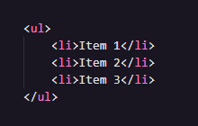
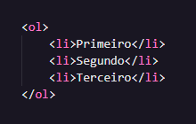

HTML: Primeiros Passos.
Por Thays Baldiotti.
Índice
MENU BOX: Para facilitar a sua localização na página, navegue MENU BOX!
História dos computadores
Pré-História:
- Ábacos e dispositivos mecânicos simples foram usados em culturas antigas para auxiliar em cálculos.
Década de 1600:
- Blaise Pascal inventou a máquina de calcular mecânica, conhecida como Pascaline.
- Gottfried Wilhelm Leibniz desenvolveu a máquina de cálculo, que utilizava um sistema binário.
Século XIX:
- Charles Babbage concebeu a ideia da "Máquina Analítica", considerada o precursor conceitual dos computadores modernos.
- Ada Lovelace, colaboradora de Babbage, é reconhecida como a primeira programadora.
Décadas de 1930-1940:
- Alan Turing formalizou o conceito de máquinas universais, estabelecendo as bases teóricas para a computação.
- Konrad Zuse construiu o primeiro computador programável, o Z3, na Alemanha.
Década de 1940:
- ENIAC (Electronic Numerical Integrator and Computer) foi o primeiro computador totalmente eletrônico, concluído em 1946 nos Estados Unidos.
Década de 1950:
- Surgimento dos primeiros computadores comerciais, como o UNIVAC I.
- Desenvolvimento dos primeiros sistemas operacionais.
Década de 1960:
- Introdução dos transistores, substituindo as válvulas, tornando os computadores mais rápidos e confiáveis.
- Surgimento dos mainframes e dos minicomputadores.
Década de 1970:
- Desenvolvimento dos microprocessadores, como o Intel 4004.
- Introdução dos primeiros computadores pessoais, como o Altair 8800 e o Apple I.
Década de 1980:
- Popularização dos computadores pessoais, com o surgimento do IBM PC e dos sistemas operacionais como MS-DOS e Windows.
Década de 1990:
- Explosão da internet e crescimento exponencial da computação pessoal.
- Desenvolvimento de tecnologias como a World Wide Web.
Década de 2000 em diante:
- Avanços contínuos em poder de processamento, armazenamento e conectividade.
- Surgimento de dispositivos móveis, smartphones e tablets.
- Evolução para a computação em nuvem e o advento da inteligência artificial.
(Retornar para o topo)
O que são Clients?
Dentro da tecnologia da informação (TI), o termo "clients" (clientes) refere-se geralmente a dispositivos ou programas que solicitam serviços ou recursos de um servidor em uma arquitetura cliente-servidor. Aqui estão dois contextos principais em que o termo "client" é comumente usado:
- Cliente de Hardware (Dispositivo Cliente):
- Em redes de computadores, um "cliente" pode ser um dispositivo de hardware, como um computador, laptop, smartphone, tablet ou qualquer outro dispositivo que solicita e consome serviços ou recursos de um servidor.
- Cliente de Software (Programa Cliente):
- Em arquiteturas cliente-servidor, um "cliente" também pode ser um programa de software que solicita serviços de um servidor. Isso pode incluir navegadores da web (clientes HTTP), clientes de email, aplicativos de mensagens, entre outros.
Em uma arquitetura cliente-servidor típica:
- O "cliente" é responsável por enviar solicitações ao "servidor".
- O "servidor" é responsável por processar essas solicitações e fornecer os recursos ou serviços solicitados.
Por exemplo, em um ambiente web, quando você abre um navegador (cliente) e acessa um site, o navegador envia solicitações a servidores web que hospedam o site. Os servidores respondem fornecendo as páginas web e outros recursos necessários para exibição no seu navegador.
Portanto, em resumo, dentro da tecnologia da informação, "clients" referem-se a dispositivos ou programas que solicitam e consomem serviços ou recursos de um servidor.
(Retornar para o topo)
O que são Servers?
Dentro da tecnologia da informação (TI), o termo "servers" (servidores) refere-se a sistemas computacionais encarregados de processar e atender solicitações dos "clients" em uma arquitetura cliente-servidor. Existem dois contextos principais para entender o papel dos servidores:
- Servidor de Hardware (Dispositivo Servidor):
- Em redes de computadores, um "servidor" é um dispositivo de hardware dedicado a fornecer serviços, recursos ou dados para os "clients". Exemplos incluem servidores web, de banco de dados ou de arquivos.
- Servidor de Software (Programa Servidor):
- Na arquitetura cliente-servidor, um "servidor" também pode ser um programa de software que processa solicitações dos "clients". Isso é comum em serviços web, onde um servidor web responde a solicitações HTTP dos navegadores (clients).
Em uma arquitetura cliente-servidor:
- O "client" envia solicitações ao "server".
- O "server" processa essas solicitações e fornece os recursos ou serviços solicitados de maneira eficiente e organizada.
Por exemplo, ao acessar um site, seu navegador (client) envia solicitações a servidores web. Os servidores processam essas solicitações, recuperam as páginas web e as enviam de volta para o navegador exibir.
Por exemplo, ao acessar um site, seu navegador (client) envia solicitações a servidores web. Os servidores processam essas solicitações, recuperam as páginas web e as enviam de volta para o navegador exibir.
(Retornar para o topo)
Como é uma estrutura básica de um HTML?
A estrutura básica de um documento HTML (Hypertext Markup Language) consiste em elementos essenciais que fornecem a estrutura e o conteúdo básico de uma página web.
Aqui está um exemplo simples:

Aqui está uma breve explicação dos elementos principais:
- <!DOCTYPE html>: Define a versão do HTML sendo usada. O exemplo usa HTML5.
- <html lang="en">: Inicia o elemento HTML, indicando o idioma da página (neste caso, português brasileiro).
- <head>: Contém metadados e informações sobre a página, como o conjunto de caracteres (<meta charset="UTF-8">), a viewport para dispositivos móveis (<meta name="viewport" content="width=device-width, initial-scale=1.0">), e o título da página (<title>Document</title>).
- <body>: Contém o conteúdo principal da página, que, neste exemplo, está vazio.
(Retornar para o topo)
Entendendo a diferença entre listas ordenadas e não ordenadas
Listas ordenadas e não ordenadas são estruturas comuns em HTML usadas para organizar e apresentar informações de maneiras distintas. Aqui está uma breve explicação sobre a diferença entre elas:
- Listas Não Ordenadas (<ul> - Unordered List):
- Tag Principal: <ul></ul>
- Itens: <li> (List Item)
- Apresentação: Os itens são apresentados sem uma ordem específica e geralmente são marcados com símbolos, como pontos (•), discos ou quadrados.
- Entrada:

- Saída:
- Listas Ordenadas (<ol> - Ordered List):
- Tag Principal: <ol></ul>
- Itens: <li> (List Item)
- Apresentação: Os itens são apresentados em uma ordem específica, geralmente numerada (1, 2, 3) ou alfanumérica (a, b, c).
- Entrada:

- Saída:
- Primeiro
- Segundo
- Terceiro
Em resumo, as listas não ordenadas são utilizadas quando a ordem dos itens não é relevante, e os itens são apresentados com marcadores. Por outro lado, as listas ordenadas são usadas quando a ordem dos itens é significativa, e os itens são numerados ou identificados alfanumericamente. A escolha entre elas depende do contexto e do significado dos itens que você está apresentando.
(Retornar para o topo)
Links de referências: